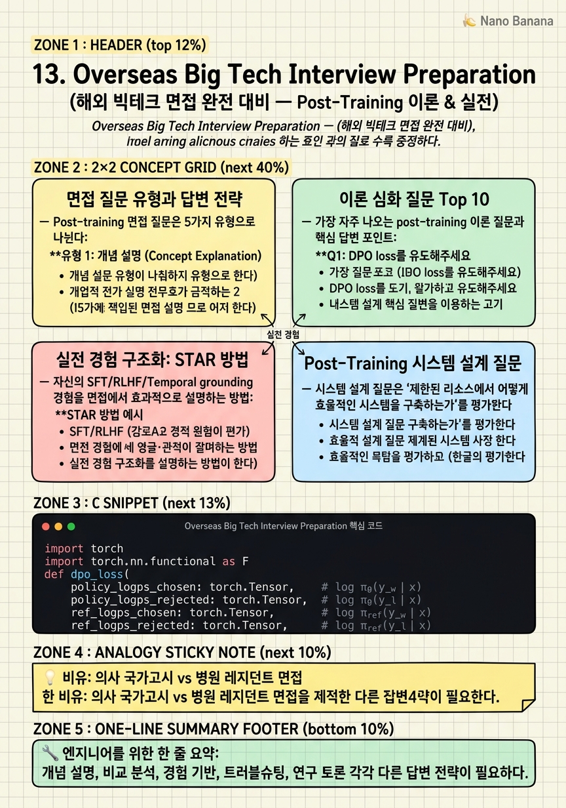

Overseas Big Tech Interview Preparation

🎯 학습 목표
- Post-training 관련 면접 질문 유형 5가지를 구분하고 각각의 답변 전략을 제시할 수 있다
- DPO/RLHF/GRPO를 수식 없이도 직관적으로 설명하는 능력을 기를 수 있다
- 자신의 SFT/RLHF/temporal grounding 경험을 STAR 방법으로 구조화할 수 있다
- Post-training 인프라 시스템 설계 질문에 체계적으로 답변할 수 있다
- 최신 논문 트렌드를 면접 답변에 자연스럽게 통합할 수 있다
해외 빅테크(Google DeepMind, Meta AI, Apple MLR, Microsoft Research, Amazon Science 등)의 post-training 관련 연구직/엔지니어직 면접은 크게 세 영역으로 구성된다: (1) 기술 심층 면접(Technical Depth) — 특정 방법론의 수식, 직관, 한계를 논의. (2) 경험 기반 면접(Behavioral/Experience) — 과거 프로젝트에서 어떤 문제를 해결했는가. (3) 시스템 설계(System Design) — post-training 파이프라인을 어떻게 설계할 것인가.
이 챕터에서는 이전 12개 챕터의 내용을 면접 관점에서 재구성한다. 각 방법론을 '왜 필요한가 → 어떻게 동작하는가 → 언제 사용하는가 → 한계는 무엇인가'의 4가지 프레임으로 설명하는 연습을 한다.
중요한 전제: 기술 면접에서 틀린 답보다 더 나쁜 것은 '모르는데 아는 척하는 것'이다. 모르는 것은 솔직하게 말하고 '이런 방향으로 생각하면 어떨까요?'라고 추론을 보여주는 것이 더 좋은 인상을 남긴다.
핵심 내용
면접 질문 유형과 답변 전략
Post-training 면접 질문은 5가지 유형으로 나뉜다:
유형 1: 개념 설명 (Concept Explanation) 예: 'DPO가 무엇인지 5분 안에 설명해주세요.' 전략: 동기 → 수식 → 직관 → 한계 순서로 설명. 먼저 '왜 필요한지'를 밝히면 이후 설명이 자연스럽게 이어진다.
유형 2: 비교 분석 (Comparison) 예: 'GRPO vs PPO의 장단점을 비교해주세요.' 전략: 표로 핵심 차이를 정리하고, '어떤 상황에서 어떤 것이 좋은가'의 판단 기준을 제시.
유형 3: 경험 기반 (Experience-based) 예: '이전에 진행한 RLHF 프로젝트에서 가장 어려웠던 점은?' 전략: STAR(Situation, Task, Action, Result) 방법으로 구체적으로 설명. 수치로 결과를 보여주는 것이 강점.
유형 4: 트러블슈팅 (Troubleshooting) 예: '훈련 중 reward가 급락하면 어떻게 진단하겠나요?' 전략: 체계적 진단 순서 (로그 확인 → 지표 확인 → 가설 → 실험)를 제시.
유형 5: 연구 토론 (Research Discussion) 예: '최근 읽은 논문 중 인상 깊었던 것을 설명해주세요.' 전략: 논문의 핵심 contribution과 한계를 균형 있게 설명. 자신의 연구와의 관련성 언급.
이론 심화 질문 Top 10
가장 자주 나오는 post-training 이론 질문과 핵심 답변 포인트:
Q1: DPO loss를 유도해주세요. KL-constrained RL의 optimal policy → log ratio로 reward 표현 → Z(x) 상쇄 → DPO loss 유도. 수식보다 '왜 reference model로 reward를 표현할 수 있는지'의 직관이 중요.
Q2: GRPO에서 value model이 없어도 되는 이유? 같은 prompt에서 G개 샘플링 → 그룹 상대적 advantage → value function 없이도 상대적 품질 평가 가능. 한계: 그룹 내 모든 응답이 나쁘면 advantage 추정이 부정확.
Q3: KL divergence를 RLHF에서 왜 사용하나요? Reward hacking 방지. Policy가 reference model(SFT)과 너무 멀어지면 일반 능력 상실. 직관: '새로운 것을 배우되 기존 것을 잊지 말라'는 제약.
Q4: SFT vs RLHF 성능 차이의 근본 원인? SFT는 '사람이 쓴 응답을 모방', RLHF는 '더 나은 응답을 선택'. 탐색 능력의 차이: RLHF는 SFT 데이터에 없는 응답도 학습 가능.
Q5: Temporal grounding에서 IoU reward의 한계? IoU가 임계값에서 binary jump → gradient 불연속. 예측이 0.49일 때 0.50이 되는 순간 reward가 갑자기 변함. 해결: smooth IoU 또는 continuous IoU reward.
Q6: Model scale이 algorithm보다 중요한 이유? 2603.19335: 240 실험 결과. 1.5B vs 7B 차이 ~50pp, algorithm 차이 ~1pp. 시사점: 알고리즘 튜닝보다 더 큰 모델을 선택하는 게 ROI 높음.
Q7: ORPO가 reference model 없이도 동작하는 이유? 자체 모델의 odds ratio 비교. '좋은 응답의 odds를 높이고 나쁜 응답의 odds를 낮추는' 것이 목표. 모델 자신이 reference 역할.
Q8: Video-OPD vs GRPO 차이를 한 문장으로? GRPO: 시퀀스 전체에 1개 scalar reward. Video-OPD: 각 토큰에 T개 step-level reward. Credit assignment 정확도 차이.
Q9: VLM에서 vision encoder를 freeze하는 이유? Pretraining에서 이미 우수한 시각 표현 학습 완료. Fine-tuning에서 건드리면 일반 시각 표현 손상 위험. Catastrophic forgetting 방지.
Q10: VAPO의 Length-Adaptive GAE 필요성? 표준 GAE(λ=0.95)에서 2000 토큰 시퀀스의 첫 토큰 reward signal이 0.95^2000 ≈ 0으로 소실. Length-adaptive λ = 1-1/(α·l)로 긴 시퀀스에서 λ→1이 되어 signal 보존.
실전 경험 구조화: STAR 방법
자신의 SFT/RLHF/Temporal grounding 경험을 면접에서 효과적으로 설명하는 방법:
STAR 방법 예시 (Temporal Grounding SFT 경험):
*Situation*: '팀에서 비디오 temporal grounding 모델을 개발하던 중 초기 SFT 모델이 타임스탬프를 너무 부정확하게 예측하는 문제가 있었습니다.'
*Task*: '훈련 데이터 품질을 개선하고 더 효과적인 출력 포맷을 설계해야 했습니다.'
*Action*: '(1) annotation이 비디오 duration의 90% 이상을 커버하는 샘플 제거, (2) CoT를 포함한 출력 포맷 도입(think 태그), (3) negative sample 비율을 20%로 증가, (4) fps를 1에서 2로 높여 세밀한 temporal 이해 향상.'
*Result*: 'Charades-STA R@1 IoU@0.7에서 45%에서 58%로 향상. 데이터 변경이 모델 구조 변경보다 훨씬 효과적이었습니다.'
좋은 STAR 답변의 특징:
- 구체적인 수치 포함 - 자신의 의사결정 과정 명시 - 실패나 어려움도 솔직히 언급 (성장 내러티브) - 학습한 교훈 언급
Post-Training 시스템 설계 질문
시스템 설계 질문은 '제한된 리소스에서 어떻게 효율적인 시스템을 구축하는가'를 평가한다.
대표 질문: '1000시간의 비디오 temporal grounding 데이터로 Qwen3-VL-7B를 fine-tuning하는 시스템을 설계해주세요.'
답변 구조:
*1. 요구사항 명확화* (2분) - 데이터: 1000시간 원본 → 얼마나 많은 annotation이 있는가? - 하드웨어: GPU 종류와 수? - 목표: 어떤 벤치마크에서 얼마나 향상?
*2. 데이터 파이프라인* (5분) - 비디오 분할: Scene detection, 15-60초 클립 - 프레임 샘플링: 1fps, 360×640 해상도 - Annotation 품질 필터: Duration ratio, IoU 일치도 확인 - 텍스트 편향 필터: LLM judge로 text-only answerable 제거
*3. 훈련 전략* (5분) - Stage 1: Stage 2 SFT (일반 VLM 데이터 + temporal grounding 데이터 혼합) - Stage 2: Task-specific SFT with LoRA (temporal grounding 특화) - 선택적: GRPO 또는 Video-OPD로 RL fine-tuning
*4. 인프라* (3분) - DeepSpeed ZeRO-2 for 7B model, 8×A100 - Wandb로 reward/KL/forgetting 지표 모니터링 - Checkpoint 전략: 최고 validation IoU로 선택
*5. 평가* (2분) - Charades-STA, QVHighlights R@1 IoU@0.5/0.7 - 내부 evaluation set으로 forgetting 확인
최신 논문 토론 준비
연구 토론 면접에서는 최신 논문 지식과 비판적 사고를 함께 평가한다. 추천 준비 전략:
논문 설명 템플릿:
1. Problem: '이 논문은 X 문제를 해결한다.' 2. Key insight: '핵심 아이디어는 Y다.' 3. Method: '구체적으로 Z 방법을 사용한다.' 4. Result: '벤치마크에서 W% 향상을 보였다.' 5. Limitation: '하지만 이 방법은 V 상황에서 한계가 있다.' 6. My view: '이 방법을 내 프로젝트에 적용한다면 어떻게 하겠다.'
이 과정에서 다룬 핵심 논문들:
| 논문 | 핵심 기여 | 한계 | |---|---|---| | ORPO (2403.07691) | 단일 loss로 SFT+alignment | 자기 reference에 bootstrap 의존 | | Scale vs Algo (2603.19335) | scale > algorithm 실증 | GSM8K에만 특화된 결론 | | VAPO (2504.05118) | Length-Adaptive GAE | 32B 모델에서만 검증 | | Video-OPD (2602.02994) | step-level reward | Teacher 모델 품질에 의존 | | STVG-R1 (2602.11730) | ID 기반 grounding | Manual ID 부여 overhead | | Watch Before You (2604.05117) | 텍스트 bias 필터링 | Judge 모델 편향 반영 | | VideoRewardBench (2509.00484) | reward model 평가 | 1563 샘플로 제한 | | Gradient Rank (2504.10766) | 데이터 품질 정량화 | Rank과 성능 인과관계 불확실 |
💡 비유로 이해하기
해외 빅테크 post-training 면접은 의사 국가고시(이론 지식)와 레지던트 면접(실전 경험)을 동시에 치르는 것과 같다. 국가고시에서 병의 메커니즘을 설명할 수 있어야 하듯, DPO의 수식 유도를 이해해야 한다. 레지던트 면접에서 '어려운 환자를 어떻게 치료했나'를 설명하듯, 'reward hacking 문제를 어떻게 해결했나'를 구체적으로 설명해야 한다.
차별점은 '비판적 사고'다. 면접관들은 최신 논문을 무비판적으로 받아드리는 것이 아니라, '이 방법의 한계는 무엇인가', '이 결과가 다른 도메인에서도 성립하는가'를 물을 때 어떻게 생각하는지를 본다.
가장 좋은 답변은 '모르는 것을 솔직히 인정하고 어떻게 생각하면 답에 가까워질 수 있는지'를 보여주는 것이다. 완벽한 답보다 좋은 추론 과정이 더 가치 있다.
💻 코드 예시
면접에서 자주 나오는 'DPO loss를 처음부터 구현해주세요' 질문에 대한 모범 답변 코드다. 수식 없이도 이해할 수 있도록 주석을 달았다.
import torch
import torch.nn.functional as F
def dpo_loss(
policy_logps_chosen: torch.Tensor, # log π_θ(y_w | x)
policy_logps_rejected: torch.Tensor, # log π_θ(y_l | x)
ref_logps_chosen: torch.Tensor, # log π_ref(y_w | x)
ref_logps_rejected: torch.Tensor, # log π_ref(y_l | x)
beta: float = 0.1,
) -> torch.Tensor:
"""
DPO Loss 구현
핵심 아이디어: reward = beta * log(π_θ / π_ref)
Bradley-Terry 모델: P(y_w > y_l) = sigma(r_w - r_l)
r = beta * log(π / π_ref) 대입하면:
L = -E[log sigma(beta * (log(π_θ(y_w)/π_ref(y_w)) - log(π_θ(y_l)/π_ref(y_l))))]
"""
# log ratio: 현재 정책이 reference 대비 얼마나 선호/비선호를 올렸는가
chosen_log_ratio = policy_logps_chosen - ref_logps_chosen
rejected_log_ratio = policy_logps_rejected - ref_logps_rejected
# DPO loss: 선호 응답의 log ratio를 비선호보다 높이도록
logits = beta * (chosen_log_ratio - rejected_log_ratio)
loss = -F.logsigmoid(logits).mean()
# 분석용 통계
with torch.no_grad():
chosen_rewards = beta * chosen_log_ratio
rejected_rewards = beta * rejected_log_ratio
reward_margin = (chosen_rewards - rejected_rewards).mean()
accuracy = (chosen_rewards > rejected_rewards).float().mean()
return loss, {
"loss": loss.item(),
"reward_margin": reward_margin.item(),
"accuracy": accuracy.item(),
"chosen_reward": chosen_rewards.mean().item(),
"rejected_reward": rejected_rewards.mean().item(),
}
# 면접 시 설명 포인트:
# 1. 'policy_logps'는 response token들의 log prob 합 (or mean)
# 2. 'beta'는 KL constraint 강도 - 클수록 reference에 가깝게 유지
# 3. 'accuracy'가 계속 올라가고 reward_margin이 커지면 정상 훈련
# 4. reward_margin이 saturate하면 overfitting 신호chosen_log_ratio - rejected_log_ratio가 DPO의 핵심이다. Reference model 대비 chosen 응답의 log probability가 rejected보다 높아지도록 학습한다. beta는 KL divergence constraint의 강도로, 클수록 reference model에 가깝게 머문다. accuracy는 각 배치에서 chosen reward가 rejected reward보다 높은 비율로, 훈련이 진행될수록 증가해야 한다.
🏭 현업에서의 평가
✅ 시니어가 보는 것
- 이론을 자신의 경험과 연결하여 설명하는 능력 (추상적 지식 → 구체적 경험)
- 모르는 것을 솔직히 인정하고 추론하는 능력
- 최신 논문의 한계를 비판적으로 평가하는 능력
- 복잡한 시스템을 단계적으로 설계하는 체계적 사고
- 불확실한 상황에서 데이터 기반으로 의사결정하는 방법론
⚠️ 레드 플래그
- 모든 질문에 확신 있게 답하려다 틀린 정보를 전달하는 경우
- 자신의 기여 없이 '우리 팀이 이것을 했습니다'만 말하는 경우
- 이론만 알고 실제 구현 경험이 없는 경우 (코드 레벨 질문에서 드러남)
- 최신 트렌드를 모르거나 자신의 경험과 연결하지 못하는 경우
🎤 예상 인터뷰 질문
- DPO와 ORPO를 각각 언제 선택하시겠나요? 자신의 프로젝트 경험을 바탕으로 설명해주세요.
- 비디오 temporal grounding 프로젝트에서 가장 어려웠던 기술적 결정과 그 근거를 설명해주세요.
- 현재 VLM post-training 분야에서 아직 해결되지 않은 가장 중요한 문제는 무엇이라고 생각하시나요?
✨ 핵심 요약
면접 질문 5유형 파악
개념 설명, 비교 분석, 경험 기반, 트러블슈팅, 연구 토론 각각 다른 답변 전략이 필요하다.
STAR 방법으로 경험 구조화
Situation → Task → Action → Result. 구체적 수치와 자신의 의사결정 과정이 핵심.
이론: 동기 → 수식 → 직관 → 한계 순서
'왜 필요한지'를 먼저 설명하면 이후 기술 설명이 자연스럽게 이어진다.
모르는 것을 솔직히 인정하라
틀린 답보다 '잘 모르지만 이런 방향으로 추론하면...'이 더 좋은 인상을 준다.
최신 논문의 한계도 함께 설명
논문 contribution만 아는 것은 표면적 이해다. 한계와 자신의 관점을 추가하면 비판적 사고를 보여준다.
시스템 설계는 요구사항 → 파이프라인 → 인프라 → 평가 순서
먼저 요구사항을 명확히 한 후 단계별로 설계를 전개한다.
DPO loss 직접 구현이 필수
면접에서 자주 나오는 실전 코딩 문제. log ratio, beta, accuracy 지표를 정확히 구현할 수 있어야 한다.